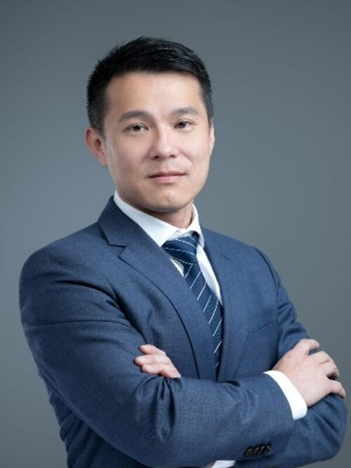
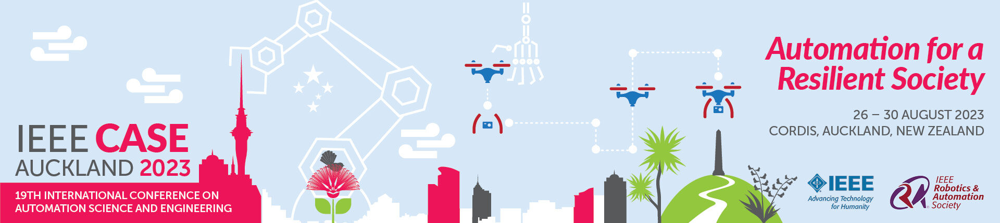
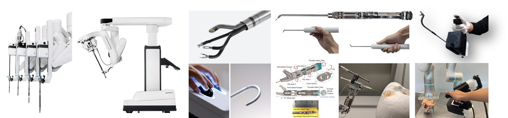
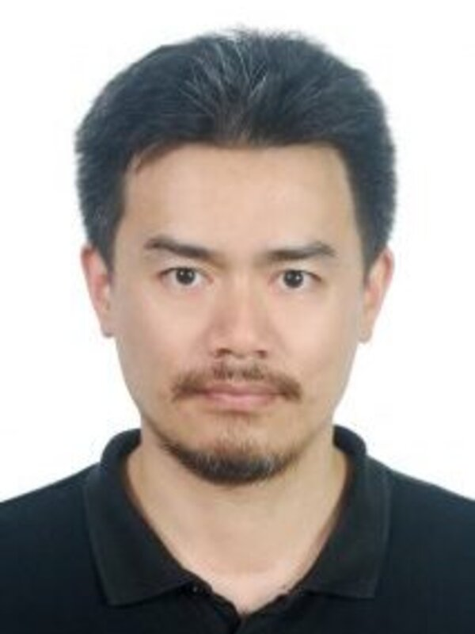
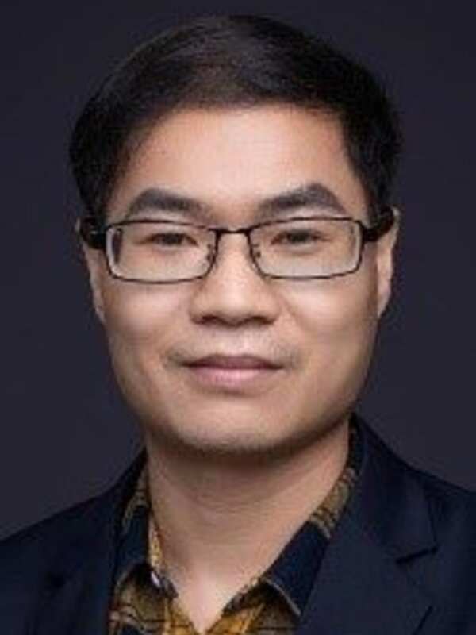
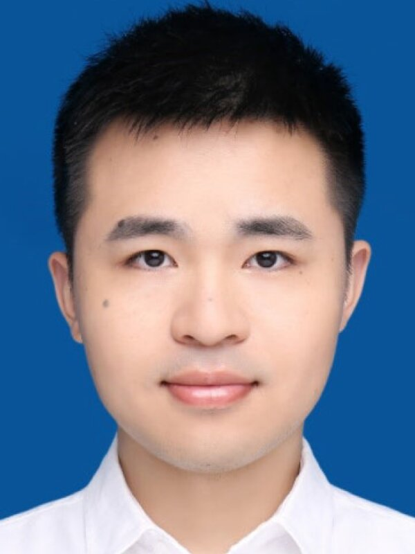
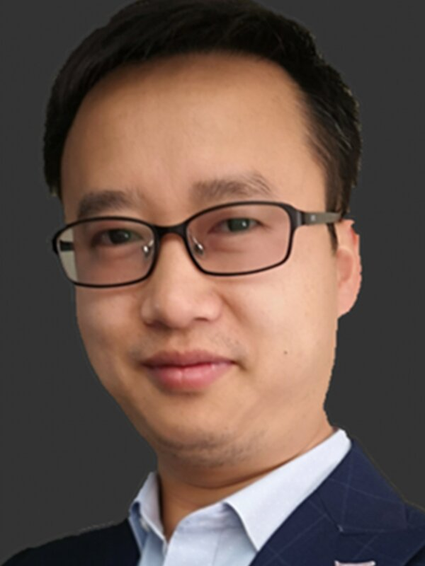
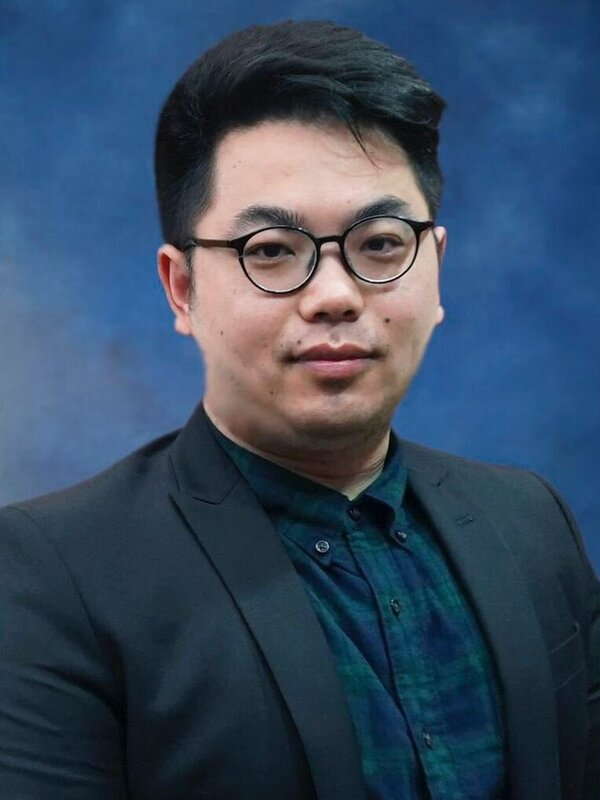

AU Kwok Wai Samuel
Professor
The Chinese University of Hong Kong
CEO of Cornerstone
Robotics Limited
IEEE CASE 2023 Workshop


The development of surgical robots has led to the widespread acceptance of minimally invasive surgeries for accessing surgical sites through natural orifices or minimal incisions. While existing abdominal surgical robots have been well-developed in academic and commercial areas, there is still a great need for more sophisticated surgical robots, especially in complex and deep anatomies such as transoral surgery, sinus surgery, and neurosurgery. Therefore, the design, modeling, sensing, and control of dexterous surgical robots are critical and significant. This workshop aims to bring together professionals from diverse backgrounds, including robotics, medicine, and medical device manufacturing, to share their expertise and insights into the latest technological and business trends in surgical robotics. The workshop will focus on the critical yet contradictory requirements of dexterity and stiffness in surgical robot design, and various actuation methods proposed to meet these requirements, such as cable-driven mechanisms, push-pull rod actuation, concentric pre-curved tubes, pneumatic/hydraulic actuation, smart materials, and magnetic forces. The workshop will also cover the modeling of surgical robots, including kinematic and static analysis, as well as the sensing of shape and interactive force with the environment. The interactive force with the environment is essential for surgical intervention, and force sensors can be used to measure the interaction forces between the robot and tissue. Besides, control is critical for dexterous surgical robots, and various control strategies have been proposed, including position control, force control, and impedance control. Overall, this workshop will provide a platform for participants to exchange knowledge and build networks to advance the field of dexterous surgical robotics and improve patient outcomes in complex surgeries.
We invite extended abstract submissions on all topics of interest in 1+n format (1 page of main content and n pages of references). The formatting instructions can follow the IEEE conference template: https://ras.papercept.net/conferences/support/support.php.
Note that the accepted abstract does not affect future publication.
The accepted abstract will be assigned a 10-min oral presentation (file name: WS2+ contact person’s name). The recommended slide has a .pptx extension and a size of 16:9. To play smoothly, please embed materials such as pictures and videos in the slide into the PPT file. The uploaded file size is less than 100M. Participants can create a poster to show their work and facilitate discussions.
The extended abstract can be submitted to xinma@mae.cuhk.edu.hk and xcwang@mae.cuhk.edu.hk. The slides can be uploaded to https://forms.gle/Jcxpwwye2yii8F3h9. If you have issues to submit, please contact xcwang@mae.cuhk.edu.hk.
There will be a contribution award. Three groups of winners will be awarded certificates and prizes (NZD 250 for each).
Sponsored by Landing Point Co. Ltd.
| Time | Session |
|---|---|
| 10:00 am – 10:30 am |
Opening Remarks Prof. AU Kwok Wai Samuel |
| 10:30 am – 11:00 am |
High-Precision Surgical Robots: An Interdisciplinary Art Work Prof. HUANG Kai Invited |
| 11:00 am – 11:30 am |
Neural-Network-Based Computational Optimization with Applications to Surgical Robotics Prof. LI Weibing Invited |
| 11:30 am – 12:00 pm |
Force Perception in Flexible Endoscopic Surgical Robots Prof. CAO Lin Invited |
| 12:00 pm – 1:00 pm |
Lunch Break |
| 1:00 pm – 1:30 pm |
Prof. Richard M. Voyles Invited Online |
| 1:30 pm – 2:00 pm |
Flexible and Variable Stiffness Robot for Medical Applications Prof. ZHOU Jianshu Invited |
| 2:00 pm – 2:30 pm |
16-DOF Hybrid Continuum Medical Robot with Enhanced Dexterity and Manipulability in Confined Space Prof. MA Xin, Mr. ZHU Puchen Invited |
| 2:30 pm – 3:00 pm |
Coffee Break |
| 3:00 pm – 3:30 pm |
An early attempt of soft robotics surgery: soft crawling robot for colorectal cancer inspection Dr. PAN Tianle, Mr. WANG Xuchen |
| 3:30 pm – 5:00 pm |
Panel Discussion |

AU Kwok Wai Samuel
Professor
The Chinese University of Hong Kong
CEO of Cornerstone
Robotics Limited

HUANG Kai
Professor
Sun Yat-sen University

LI Weibing
Associate Professor
Sun Yat-sen University

ZHOU Jianshu
Research Assistant Professor
The Chinese University of Hong Kong

CAO Lin
Assistant Professor
The University of Sheffield

MA Xin
Research Assistant Professor
The Chinese University of Hong Kong
WANG Xuchen
PhD Candidate
The Chinese University of Hong Kong
AU Kwok Wai Samuel received the Ph.D. degree in mechanical engineering from the Massachusetts Institute of Technology, Cambridge, MA, USA, in 2007. He is currently a Professor with the Department of Mechanical and Automation Engineering, The Chinese University of Hong Kong (CUHK), the Director of Multiscale Medical Robotics Center, InnoHK, and also the CEO of Cornerstone Robotics Limited. Before joining CUHK, he was the Manager of Systems Analysis with the Department of New Product Development, Intuitive Surgical, Inc., Sunnyvale, CA, USA. He coinvented the FDA-approved da Vinci Single-Site surgical platform and was also a founding team member for the da Vinci ION system. During his Ph.D. study, he also co-invented the MIT Powered Ankle-foot Prosthesis with Prof. Hugh Herr. He holds ten U.S. Patents and more than eight pending U.S. Patents. Dr. Au received the ISI Problem Solving Award and Inventor Award in 2010 and 2011, respectively.
HUANG Kai joined Sun Yat-Sen University as a Professor in 2015. He was appointed as the director of the Institute of Artificial Intelligence and Unmanned Systems of the School of Computer Science in 2020. He was a senior researcher with the Computer Science Department, Technical University of Munich, Germany from 2012 to 2015. He obtained his Ph.D. degree from ETH Zurich in 2010, MSc from University Leiden in 2005, and BSc from Fudan University in 1999. His research interests include techniques for the analysis, design, and optimization of embedded/CPS systems, particularly in the automotive, medical, and robotic domains. He was the recipient of best paper awards/candidates for several conferences.
LI Weibing is currently an Associate Professor with the School of Computer Science and Engineering, Sun Yat-Sen University. He received the Ph.D. degree in mechanical engineering from the University of Leeds, Leeds, U.K., in 2018. From 2018 to 2020, he was a Post-Doctoral Fellow with the Chow Yuk Ho Technology Centre for Innovative Medicine, The Chinese University of Hong Kong, Hong Kong. His research interests include medical robotics, industrial robotics, modular robotics, neural networks, and cybernetics. His works have been published in top journals and conferences in robotics and AI, such as the IEEE Transactions journals, IEEE RA-L, ICRA, and IROS. He is a Review Editor for Computational Intelligence in Robotics (specialty section of Frontiers in Robotics and AI).
ZHOU Jianshu received the B.Sc. degree in automotive engineering with distinction from Central Southern University, Changsha, China, in 2015, and the M.Sc. degree in mechanical engineering with distinction and the Ph.D. degree in mechanical engineering from The University of Hong Kong, Pokfulam, Hong Kong, in 2016 and 2020, respectively. He is currently a Research Assistant Professor at the Department of Mechanical and Automation Engineering, The Chinese University of Hong Kong, Hong Kong. His research interests include soft robots, bioinspired robots, robotic end effectors, and robotic grasping and manipulation.
CAO Lin received the Ph.D. degree in mechanical engineering from the University of Saskatchewan, Saskatoon, SK, Canada, in 2015. He was a Research Fellow with the Nanyang Technological University, Singapore, and is currently a Lecturer (Assistant Professor) with the University of Sheffield, Sheffield, U.K. His research interests include medical robots and soft robots.
MA Xin received the B.Eng. and Ph.D. degrees in mechanical and electronic engineering from Dalian University of Technology, Dalian, China, in 2011 and 2017, respectively. From 2017 to 2019 he was at The Chinese University of Hong Kong, as Research Postdoctoral Fellow. From 2019 to 2021 he was at Purdue University, as Postdoctoral Fellow. He is currently a Research Assistant Professor at The Chinese University of Hong Kong.
WANG Xuchen received the M.S. degree in mechanical engineering from Purdue University, West Lafayette, IN, USA, in 2018. He is currently working toward the Ph.D. degree in Dept. of Mechanical and Automation Engineering, The Chinese University of Hong Kong, Hong Kong. His research interests include surgical instruments and surgical mechatronic systems.